suppressPackageStartupMessages({
library("QFeatures")
library("dplyr")
library("tidyr")
library("ggplot2")
library("msqrob2")
library("stringr")
library("ExploreModelMatrix")
library("kableExtra")
library("ComplexHeatmap")
library("scater")
})9 Staes Spike-in Study: a Spectronaut DIA spike-in study
This chapter explains the main concepts for data-processing and statistical analysis of (DIA) proteomics data using msqrob2. To illustrate these concepts, we will use using a publicly available spike-in study published by Staes et al. (Staes et al. 2024). They spiked digested UPS proteins in a yeast digested background at the following ratio’s (yeast:ups ratio 10:1, 10:2, 10:4, 10:8, 10:10). Here we will use a subset of the data, i.e. dilutions 10:2, 10:4 and 10:8. We will use output of the search engine Spectronaut. The main search output for this Spectronaut version was stored in a report.parquet file.
Spectronaut provides multiple quantifications, e.g. derived from the MS1 or MS2 spectra, and at precursor or protein (protein group) level. The term ‘precursor’ refers to a charged peptide species and is the basic unit of identification and quantification in DIA. Hence, in the context of DIA we refer to a precursor table, instead of to a PSM table in DDA.
Examples of different quantities are:
- raw MS1 quantity:
FG_MS1RawQuantity, normalised MS1 quantity:FG_MS1Quantity, MS2 Precursor quantities:FG_MS2RawQuantity, Normalised MS2 Precursor quantities:FG_MS2Quantity, etc., which are all at the precursor level. - MS2 based protein(protein group)-level summaries are stored in
PG_MaxLFQ.
In this vignette, we will use the FG_MS2RawQuantity column so as to illustrate all steps. If you prefer to start from the FG_MS2Quantity intensities, you can skip the normalisation step as the normalisation already has been done by Spectronaut internally.
9.1 Load packages
We load the msqrob2 package, along with additional packages for data manipulation and visualisation.
9.2 Data
9.2.1 Precursor table
We load the output from Spectronaut parquet file.
precursorFile <- "https://github.com/statOmics/msqrob2data/raw/refs/heads/main/dia/spikeinStaes/spikein248-staesetal2024-spectronaut.parquet" We can import the report.parquet file using the read_parquet function from the arrow package. Note, that older versions of Spectronaut store the output as report.tsv, which we import using the fread function. Both read_parquet and fread can import data directly from the web as well as data from local files on your computer.
precursors <- arrow::read_parquet(precursorFile) # function from the arrow package
## For older versions of Spectronaut, where the results are stored as tsv files.
## Note that the precursorFile then would point to "report.tsv"
## precursors <- data.table::fread(precursorFile, check.names = TRUE, integer64 = "double")
knitr::kable(head(precursors))| R_FileName | PG_Genes | PG_ProteinAccessions | PG_ProteinGroups | PG_ProteinNames | PG_Organisms | PG_NrOfPrecursorsIdentified | PG_NrOfPrecursorsIdentified_(Experiment-wide) | PG_Qvalue | PG_QValue_(Run-Wise) | PG_MS1Quantity | PG_MS2Quantity | PG_Quantity | PEP_StrippedSequence | EG_ModifiedSequence | EG_PrecursorId | FG_Charge | EG_IsDecoy | PEP_IsProteotypic | PEP_MS1Quantity | PEP_MS2Quantity | PEP_Quantity | PEP_UsedForProteinGroupQuantity | EG_IonMobility | EG_ApexRT | FG_CalibratedMz | EG_Qvalue | EG_IsImputed | FG_Qvalue | FG_PrecursorSignalToNoise | FG_SignalToNoise | FG_ShapeQualityScore | FG_ShapeQualityScore_(MS1) | FG_ShapeQualityScore_(MS2) | FG_MS1Quantity | FG_MS1RawQuantity | FG_MS2Quantity | FG_MS2RawQuantity | EG_NormalizationFactor |
|---|---|---|---|---|---|---|---|---|---|---|---|---|---|---|---|---|---|---|---|---|---|---|---|---|---|---|---|---|---|---|---|---|---|---|---|---|---|---|
| B000254_Ap_6883_EXT-765_DIA_Yeast_UPS2_ratio02_DIA | TY4B-P;TY4B-H;TY4A-J;TY4B-J;TY4A-H | A0A0B7P3V8;P0C2J7;P47023;P47024;Q6Q5P6 | A0A0B7P3V8;P0C2J7;P47023;P47024;Q6Q5P6 | YP41B_YEAST;YH41B_YEAST;YJ41A_YEAST;YJ41B_YEAST;YH41A_YEAST | Saccharomyces cerevisiae (strain ATCC 204508 / S288c) | 1 | 1 | 0 | 0.0000777 | 1737294.12 | 23325.660 | 23325.660 | IVDLVEK | IVDLVEK | IVDLVEK.2 | 2 | FALSE | False | 1737294.125 | 23325.660 | 23325.660 | TRUE | 0.7611104 | 76.33237 | 408.2469 | 1,123548054819927E-05 | FALSE | 0.0000112 | NaN | 13.076940 | 0.5988563 | 0.8960734 | 0.4609673 | 1737294.125 | 1330965.38 | 23325.660 | 17870.115 | 1.3052888 |
| B000254_Ap_6883_EXT-765_DIA_Yeast_UPS2_ratio02_DIA | YPR010C-A | A5Z2X5 | A5Z2X5 | YP010_YEAST | Saccharomyces cerevisiae (strain ATCC 204508 / S288c) | 1 | 1 | 0 | 0.0000000 | 279530.47 | 15254.879 | 15254.879 | LTGNPELSSLDEVLAK | LTGNPELSSLDEVLAK | LTGNPELSSLDEVLAK.2 | 2 | FALSE | True | 279530.469 | 15254.879 | 15254.879 | TRUE | 1.0992813 | 117.79333 | 843.4530 | 1,8731018963979458E-07 | FALSE | 0.0000002 | NaN | 18.562664 | 0.6349962 | 0.4518091 | 0.8761904 | 279530.469 | 274669.47 | 15254.879 | 14989.599 | 1.0176976 |
| B000254_Ap_6883_EXT-765_DIA_Yeast_UPS2_ratio02_DIA | STE2 | D6VTK4 | D6VTK4 | STE2_YEAST | Saccharomyces cerevisiae (strain ATCC 204508 / S288c) | 3 | 3 | 0 | 0.0001036 | 36324.98 | 1596.699 | 1596.699 | TNTITSDFTTSTDR | TNTITSDFTTSTDR | TNTITSDFTTSTDR.2 | 2 | FALSE | True | 30351.500 | 1114.846 | 1114.846 | TRUE | 1.0337754 | 80.53452 | 780.3642 | 1,680149029187513E-05 | FALSE | 0.0000168 | NaN | 5.160248 | 0.3816292 | 0.5499600 | 0.3728411 | 30351.500 | 29111.75 | 1114.846 | 1069.309 | 1.0425860 |
| B000254_Ap_6883_EXT-765_DIA_Yeast_UPS2_ratio02_DIA | STE2 | D6VTK4 | D6VTK4 | STE2_YEAST | Saccharomyces cerevisiae (strain ATCC 204508 / S288c) | 3 | 3 | 0 | 0.0001036 | 36324.98 | 1596.699 | 1596.699 | LYDLYPR | LYDLYPR | LYDLYPR.2 | 2 | FALSE | True | 7748.781 | 1316.819 | 1316.819 | TRUE | 0.8341860 | 88.16772 | 470.2505 | 0,0016666728759980882 | FALSE | 0.0016667 | NaN | 2.409254 | 0.3015331 | 0.3229307 | 0.3912955 | 7748.781 | 8079.68 | 1316.819 | 1373.051 | 0.9590456 |
| B000254_Ap_6883_EXT-765_DIA_Yeast_UPS2_ratio02_DIA | STE2 | D6VTK4 | D6VTK4 | STE2_YEAST | Saccharomyces cerevisiae (strain ATCC 204508 / S288c) | 3 | 3 | 0 | 0.0001036 | 36324.98 | 1596.699 | 1596.699 | TFVSETADDIEK | TFVSETADDIEK | TFVSETADDIEK.2 | 2 | FALSE | True | 71964.930 | 1523.927 | 1523.927 | TRUE | 0.9687490 | 85.28220 | 677.8233 | 2,4746665476584473E-05 | FALSE | 0.0000247 | NaN | 1.662843 | 0.4326174 | 0.6393431 | 0.3356901 | 71964.930 | 75014.59 | 1523.927 | 1588.507 | 0.9593459 |
| B000254_Ap_6883_EXT-765_DIA_Yeast_UPS2_ratio02_DIA | CET1 | O13297 | O13297 | CET1_YEAST | Saccharomyces cerevisiae (strain ATCC 204508 / S288c) | 14 | 15 | 0 | 0.0000000 | 221288.70 | 12164.803 | 12164.803 | IDPSFLNIIPDDDLTK | IDPSFLNIIPDDDLTK | IDPSFLNIIPDDDLTK.2 | 2 | FALSE | True | 140974.625 | 17137.367 | 17137.367 | TRUE | 1.1310339 | 129.05934 | 908.4742 | 1,4254762712598077E-05 | FALSE | 0.0000143 | NaN | 10.028002 | 0.6728779 | 0.6650686 | 0.6714950 | 140974.625 | 149003.81 | 17137.367 | 18113.422 | 0.9461142 |
Each row in the precursor data table is in “long format” and contains information about one precursor in a specific run (the table below shows the first 6 rows). The columns contains various descriptors about the precursor, such as its sequence, its charge, run, etc.
We select variables to reduce the memory footprint. (was already done to store the output in a small parquet file). We also provided the equivalent names of the variables in DIA-NN in comments.
precursors <- precursors |>
select(
R_FileName, #Run,
EG_PrecursorId, #PrecursoR_Id,
EG_ModifiedSequence, #Modified.Sequence,
PEP_StrippedSequence, #Stripped.Sequence,
FG_Charge, #PrecursoR_Charge,
PG_ProteinGroups, #Protein.Group,
PG_ProteinNames, #Protein.Names,
PG_ProteinAccessions, #Protein.Ids,
PG_Genes, #Genes,
FG_MS2RawQuantity, #PrecursoR_Quantity,
FG_MS2Quantity, #PrecursoR_Normalised,
FG_MS1RawQuantity, #Ms1.Area,
FG_MS1Quantity, #Ms1.Normalised #No real DIA-NN counterpart
EG_NormalizationFactor, #Normalisation.Factor
EG_Qvalue, #Q.Value,
#No spectronaut counterpart #Lib.Q.Value,
PG_Qvalue, # PG_Q.Value,
#No spectronaut counterpart #Lib.PG_Q.Value
PEP_IsProteotypic, #Proteotypic,
EG_IsDecoy, #Decoy,
EG_ApexRT,#RT
EG_IsImputed)Unlike for real experiments, we known the ground truth for this dataset: UPS proteins were spiked in at different concentrations and are thus differentially abundant (DA, spiked in). Yeast proteins consist of the background proteome that is the same in all samples and are thus non-DA.
precursors <- precursors |>
mutate(species = grepl(pattern = "ups",PG_ProteinGroups) |>
as.factor() |>
recode("TRUE"="ups","FALSE" = "yeast"))
precursors |>
pull(species) |>
table()
yeast ups
391266 7281 There is a problem with the encoding of some variables:
EG_Qvalueis of typecharacterwhile it should be anumeric.PEP_IsProteotypicis of typecharacterand not alogical.
precursors$EG_Qvalue |> head()[1] "1,123548054819927E-05" "1,8731018963979458E-07" "1,680149029187513E-05"
[4] "0,0016666728759980882" "2,4746665476584473E-05" "1,4254762712598077E-05"precursors$PEP_IsProteotypic |> head()[1] "False" "True" "True" "True" "True" "True" We replace , in . in EG_Qvalue and cast it into a double and we cast PEP_IsProteotypic to a logical.
precursors <- precursors |>
mutate(EG_Qvalue = sub(pattern = ",",
replacement = ".",
EG_Qvalue) |> as.double(),
PEP_IsProteotypic = as.logical(PEP_IsProteotypic))
precursors$EG_Qvalue |> head()[1] 1.123548e-05 1.873102e-07 1.680149e-05 1.666673e-03 2.474667e-05
[6] 1.425476e-05precursors$PEP_IsProteotypic |> head()[1] FALSE TRUE TRUE TRUE TRUE TRUEQuick check on distribution of intensities.
precursors |>
ggplot(aes(x = log2(FG_MS2RawQuantity))) +
geom_density()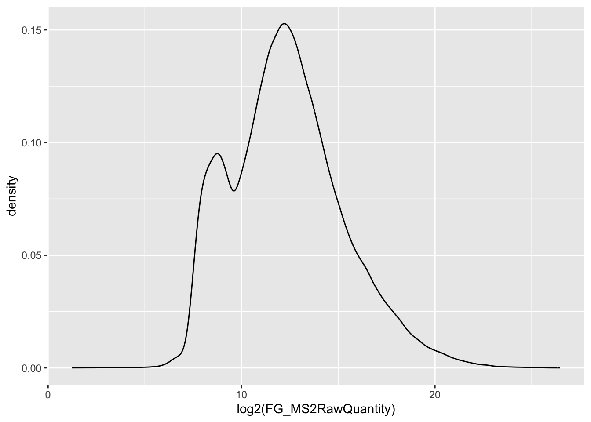
precursors |>
ggplot(aes(x = log2(FG_MS2RawQuantity))) +
geom_density() +
facet_wrap(~EG_IsImputed)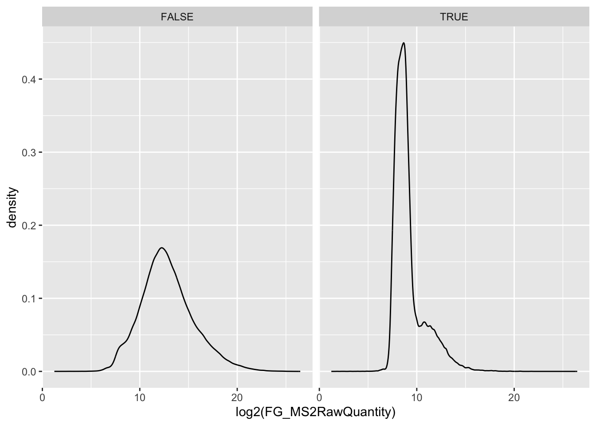
Note, that imputation has occurred. We prefer to avoid imputation and will filter the imputed intensities out during the preprocessing.
9.2.2 Sample annotation table
The sample annotation table) is not available and can be generated from the run labels, as the researchers included information on the design in the filenames.
We will make a new data frame with the annotation.
We first generate variable
runCol, that gives an overview of the different runs in the experiment, i.e. the unique names in the column Run of the report file. This is a mandatory column in the annotation file that is required by thereadQFeaturesfunction that will be used to generate a QFeatures object with the quant data.Next we generate variable
sampleId, to pinpoint the different samples in the dataset. This can be extracted from the run names as the researchers have stored information on the meta data in the file names for each run. E.g. for run B000282_Ap_6883_EXT-765_DIA_Yeast_UPS2_ratio04_DIA_2 this is the ratio, i.e. ratio04, and the replicate, i.e._2after DIA. Note, that the first replicate has no number.- We first replace the redundant pattern “DIA” with an empty character string.
- Next we split the strings according to the pattern “UPS2” using the
strsplitfunction and - keep the right part of the string. We do this by looping over the list from
strplitwith an sapply loop, which takes the output of b. as its first argument, uses the function ‘[’ to subset vector of strings in each list element and uses an optional argument ‘2’ to select the second string of the vector (right part).
We add the variable
ratioby parsing the variable stringId and- replacing pattern “ratio” by an empty string using the
gsubfunction - splitting the output of
gsubaccording to pattern “_” and - keeping the left part of the string (first element of the vector of strings in each list item of the substr output)
- converting the output of c to an integer
- converting the ratio into a factor
- replacing pattern “ratio” by an empty string using the
We add the variable
repby parsing the variable stringId, and- splitting it according to pattern “_“,
- keeping the right part of the string (second element of the vector of strings in each list item of the substr output)
- replacing NA by 1, as for the first replicate no number was added to the filename
- converting it into a factor
annot <- data.frame(runCol = precursors |>
pull(R_FileName) |>
unique() # 1.
) |>
mutate(sampleId = gsub(x = runCol, pattern = "_DIA", replacement = "") |> #2.a
str_split("UPS2_") |> #2.b
sapply(`[`, 2) #2.c
) |>
mutate(
condition = gsub("ratio", "", sampleId) |> #3.a
str_split("_") |> #3.b
sapply(`[`, 1) |> #3.c
as.numeric() |> #3.d
as.factor(), #3.e
rep = sampleId |>
str_split("_") |> #4.a
sapply(`[`, 2) |> #4.b
replace_na(replace = "1") |> #4.c
as.factor(), #4.d
ratio = condition |>
as.character() |>
as.double()
)9.2.3 Convert to QFeatures
First, recall that the precursor table is a file in long format. Every quantitative column in the precursor table contains information for multiple runs. Therefore, the function split the table based on the run identifier, given by the runCol argument (for Spectronaut, that identifier is contained in run). So, the QFeatures object after import will contain as many sets as there are runs. Next, the function links the annotation table with the PSM data. To achieve this, the annotation table must contain a variable named runCol that provides the run identifier in which each sample has been acquired, and this information will be used to match the identifiers in the Run column of the precursor table.
Here, we will use the FG_MS2RawQuantity column as quantification input.
Note, that we filter a number of variables to reduce the footprint of the QFeatures object.
(qf <- readQFeatures(assayData = precursors,
colData = annot,
quantCols = "FG_MS2RawQuantity",
runCol = "R_FileName",
fnames = "EG_PrecursorId"))Checking arguments.Loading data as a 'SummarizedExperiment' object.Splitting data in runs.Formatting sample annotations (colData).Formatting data as a 'QFeatures' object.Setting assay rownames.An instance of class QFeatures (type: bulk) with 9 sets:
[1] B000254_Ap_6883_EXT-765_DIA_Yeast_UPS2_ratio02_DIA: SummarizedExperiment with 44283 rows and 1 columns
[2] B000258_Ap_6883_EXT-765_DIA_Yeast_UPS2_ratio04_DIA: SummarizedExperiment with 44283 rows and 1 columns
[3] B000262_Ap_6883_EXT-765_DIA_Yeast_UPS2_ratio08_DIA: SummarizedExperiment with 44283 rows and 1 columns
...
[7] B000302_Ap_6883_EXT-765_DIA_Yeast_UPS2_ratio02_DIA_3: SummarizedExperiment with 44283 rows and 1 columns
[8] B000306_Ap_6883_EXT-765_DIA_Yeast_UPS2_ratio04_DIA_3: SummarizedExperiment with 44283 rows and 1 columns
[9] B000310_Ap_6883_EXT-765_DIA_Yeast_UPS2_ratio08_DIA_3: SummarizedExperiment with 44283 rows and 1 columns 9.3 Data preprocessing
The data preprocessing workflow for DIA data is similar to the workflow for DDA-LFQ data, but there are suble differences as we start from precursor level data and have additional columns.
9.3.1 Encoding missing values
We first replace any zero in the quantitative data with an NA.
qf <- zeroIsNA(qf, names(qf))Note that msqrob2 can handle missing data without having to rely on hard-to-verify imputation assumptions, which is our general recommendation. However, msqrob2 does not prevent users from using imputation, which can be performed by starting from Spectronaut output with imputed values or by imputing the data themselves, e.g. by using impute() from the QFeatures package.
9.3.2 Precursor Filtering
Filtering removes low-quality and unreliable precursors that would otherwise introduce noise and artefacts in the data.
Remove questionable identifications
We apply standard filtering:
q-value threshold of 0.01 for the identification of precursors (
EG_Qvalue) and protein groups (PG_Qvalue).Remove precursors that could not be mapped, i.e. when
EG_PrecursorIdcolumn is an empty string.Filter decoys, i.e. only keep precursors for which the
EG_IsDecoycolumn equals 0.Keeping only proteotypic peptides, which map uniquely to a specific protein.
Only keep non-imputed intensities:
EG_IsImputedequals 0.
qf <- qf |>
filterFeatures(~ EG_Qvalue <= 0.01 & #1.
PG_Qvalue <= 0.01 & #1.
# Lib.Q.Value <= 0.01 & #1.
# Lib.PG_Q.Value <= 0.01 & #1.
EG_PrecursorId != "" & #2.
EG_IsDecoy == 0 & #3.
PEP_IsProteotypic == 1 & #4
EG_IsImputed == 0) #5 'EG_Qvalue' found in 9 out of 9 assay(s).'PG_Qvalue' found in 9 out of 9 assay(s).'EG_PrecursorId' found in 9 out of 9 assay(s).'EG_IsDecoy' found in 9 out of 9 assay(s).'PEP_IsProteotypic' found in 9 out of 9 assay(s).'EG_IsImputed' found in 9 out of 9 assay(s).Note, that it is important that the filtering criteria are not distorting the distribution of the test statistics in the downstream analysis for features that are non-DA. It can be shown that filtering will not induce bias results when the filtering criterion is independent of test statistic. The criteria that we proposed above are all based on the results of the identification step, hence, they are independent of the downstream test statistics that will be used to prioritize DA proteins.
Assay joining
Up to now, the data from different runs were kept in separate assays. We can now join the filtered sets into an precursor set using joinAssays(). Sets are joined by stacking the columns (samples) in a matrix and rows (features) are matched according to a row identifier, here the EG_PrecursorId. We will store the result in the assay with name: precursor.
(qf <- joinAssays(
x = qf,
i = names(qf),
fcol = "EG_PrecursorId",
name = "precursors"
))Using 'EG_PrecursorId' to join assays.An instance of class QFeatures (type: bulk) with 10 sets:
[1] B000254_Ap_6883_EXT-765_DIA_Yeast_UPS2_ratio02_DIA: SummarizedExperiment with 37045 rows and 1 columns
[2] B000258_Ap_6883_EXT-765_DIA_Yeast_UPS2_ratio04_DIA: SummarizedExperiment with 37654 rows and 1 columns
[3] B000262_Ap_6883_EXT-765_DIA_Yeast_UPS2_ratio08_DIA: SummarizedExperiment with 37184 rows and 1 columns
...
[8] B000306_Ap_6883_EXT-765_DIA_Yeast_UPS2_ratio04_DIA_3: SummarizedExperiment with 37323 rows and 1 columns
[9] B000310_Ap_6883_EXT-765_DIA_Yeast_UPS2_ratio08_DIA_3: SummarizedExperiment with 36407 rows and 1 columns
[10] precursors: SummarizedExperiment with 41857 rows and 9 columns Filtering: Remove highly missing precursors
We keep peptides that were observed at last 4 times out of the \(n = 9\) samples, so that we can estimate the peptide characteristics. We tolerate the following proportion of NAs: \(\text{pNA} = \frac{(n - 4)}{n} = 0.556\), so we keep peptides that are observed in at least 44.4% of the samples, which corresponds to one treatment condition. This is an arbitrary value that may need to be adjusted depending on the experiment and the data set.
nObs <- 4
n <- ncol(qf[["precursors"]])
(qf <- filterNA(qf, i = "precursors", pNA = (n - nObs) / n))An instance of class QFeatures (type: bulk) with 10 sets:
[1] B000254_Ap_6883_EXT-765_DIA_Yeast_UPS2_ratio02_DIA: SummarizedExperiment with 37045 rows and 1 columns
[2] B000258_Ap_6883_EXT-765_DIA_Yeast_UPS2_ratio04_DIA: SummarizedExperiment with 37654 rows and 1 columns
[3] B000262_Ap_6883_EXT-765_DIA_Yeast_UPS2_ratio08_DIA: SummarizedExperiment with 37184 rows and 1 columns
...
[8] B000306_Ap_6883_EXT-765_DIA_Yeast_UPS2_ratio04_DIA_3: SummarizedExperiment with 37323 rows and 1 columns
[9] B000310_Ap_6883_EXT-765_DIA_Yeast_UPS2_ratio08_DIA_3: SummarizedExperiment with 36407 rows and 1 columns
[10] precursors: SummarizedExperiment with 39126 rows and 9 columns Filter one-hit wonders
Here, we remove proteins that can only be found by one peptide, as such proteins may not be trustworthy.
We first calculate how many distinct peptides map to each protein group (
PG_ProteinGroups). We use the stripped precursor sequence, i.e. sequence of the base peptide for this purpose.We store this information in the row data of the precursors assay
We filter precursors of one-hit wonder proteins.
# Filter for peptides per protein
pepsPerProtDf <- qf[["precursors"]] |>
rowData() |>
data.frame() |>
dplyr::select("PEP_StrippedSequence", "PG_ProteinGroups") |>
group_by(PG_ProteinGroups) |>
mutate(pepsPerProt = PEP_StrippedSequence |>
unique() |> length()
) #1.
rowData(qf[["precursors"]])$pepsPerProt <- pepsPerProtDf$pepsPerProt #2.
qf <- filterFeatures(qf,
~ pepsPerProt > 1,
keep = TRUE) #3.'pepsPerProt' found in 1 out of 10 assay(s).9.3.3 Log-transformation
We perform log2-transformation with logTransform() from the QFeatures package. We use base = 2 and store the result in a new summarized experiment named precursors_log
qf <- logTransform(qf,
base = 2,
i = "precursors",
name = "precursors_log")9.3.4 Normalisation
The most common objective of MS-based proteomics experiments is to understand the biological changes in protein abundance between experimental conditions. However, changes in measurements between groups can be caused due to technical factors. For instance, there are systematic fluctuations from run-to-run that shift the measured intensity distribution. We can this explore as follows:
- We extract the sets containing the log transformed data. This is performed using
QFeatures’ 3-way subsetting. - We use
longForm()to convert theQFeaturesobject into a long table, includingconditionandconcentrationfor filtering and colouring. - We visualise the density of the quantitative values within each sample. We colour each sample based on its spike-in condition.
qf[, , "precursors_log"] |> #1.
longForm(colvars = c( "rep", "condition")) |> #2.
data.frame() |>
filter(!is.na(value)) |>
ggplot() + #3.
aes(x = value,
colour = condition,
group = colname) +
geom_density() +
theme_minimal()Warning: 'experiments' dropped; see 'drops()'harmonizing input:
removing 18 sampleMap rows not in names(experiments)
Even in this clean synthetic data set (same yeast background with some spiked UPS proteins), the marginal precursor intensity distributions across samples are not well aligned. Ignoring this effect will increase the noise and reduce the statistical power of the experiment, and may also, in case of unbalanced designs, introduce confounding effects that will bias the results.
There are many ways to perform the normalisation, e.g.
median centering is a popular choice. If we subtract the sample median at the log scale from each precursor log2 intensity, this basically boils down to calculating log-ratio’s between the precursor intensity and its sample median.
Here, we will use the Median of Ratios method of DESeq2, which was originally developed for RNA-seq data analysis and can also correct for differences in composition of the proteomes in the different samples. The method first calculates pseudo-reference sample (row-wise mean of log2 intensities, which corresponds to the log2 transformed geometric mean). THen calculates log2 ratios of each sample w.r.t. the pseudo-reference. Finally the column wise median of these log2 ratios is taken to obtain the sample based normalisation factor on the log2 scale. This procedure is implemented in the msqrob2 function nfLogMedianOfRatios.
Note that users can also use all normalisation functions that are provided in QFeatures, i.e. by replacing the sweep function by QFeatures::normalize.
qf <- sweep( #4. Subtract log2 norm factor column-by-column (MARGIN = 2)
qf,
MARGIN = 2,
STATS = nfLogMedianOfRatios(qf,"precursors_log"),
i = "precursors_log",
name = "precursors_norm"
)This function aims to calculate norm factors on a log scale,
the input data are assumed to be on the log-scale!We explore the effect of the global normalisation in the subsequent plot.
Formally, the function applies the following operation on each sample \(i\) across all precursors \(p\):
\[ y_{ip}^{\text{norm}} = y_{ip} - \log_2(nf_i) \]
with \(y_{ip}\) the log2-transformed intensities and \(\log_2(nf_i)\) the log2-transformed norm factor. Upon normalisation, we can see that the distribution of the \(y_{ip}^{\text{norm}}\) nicely overlap (using the same code as above)
qf[, , "precursors_norm"] |>
longForm(colvars = colnames(colData(qf))) |>
data.frame() |>
filter(!is.na(value)) |>
ggplot() +
aes(x = value,
colour = condition,
group = colname) +
geom_density() +
labs(subtitle = "Normalised log2 precursor intensities") +
theme_minimal()Warning: 'experiments' dropped; see 'drops()'harmonizing input:
removing 27 sampleMap rows not in names(experiments)
9.3.5 Summarisation
Here, we summarise the precursor-level data into protein intensities using maxLFQ. maxLFQ first calculates all pairwise log ratio’s between samples only using their shared precursors. Particularly, it uses the median of the log ratio’s between the shared precursors, i.e. \[r_{ij} = median(y_{sj}-y_{si})\].
Hence, it first eliminates peptide effects. It then estimates the summaries by solving
\[
\sum_i\sum_j(y^{prot}_j - y^{prot}_i - r_ij)^2
\] It is implemented in the maxLFQ function of the iq package.
aggregateFeatures() streamlines summarisation. It requires the name of a rowData column to group the precursors into proteins (or protein groups), here PG_ProteinGroups. We provide the summarisation approach through the fun argument. Other summarisation methods are available from the MsCoreUtils package, see ?aggregateFeatures for a comprehensive list. The function will return a QFeatures object with a new set that we called proteins.
Note, that maxLFQ can take a long time for large datasets. In that case we suggest to replace function(X) iq::maxLFQ(X)$estimate by MsCoreUtils::medianPolish, na.rm = TRUE. Note that the optional argument na.rm = TRUE is needed when using medianPolish because the data contains missing values as we did not adopt imputation.
(qf <- aggregateFeatures(
qf, i = "precursors_norm",
name = "proteins",
fcol = "PG_ProteinGroups",
fun = function(X) iq::maxLFQ(X)$estimate
#fun = MsCoreUtils::medianPolish, na.rm = TRUE
))Your quantitative and row data contain missing values. Please read the
relevant section(s) in the aggregateFeatures manual page regarding the
effects of missing values on data aggregation.
Aggregated: 1/1An instance of class QFeatures (type: bulk) with 13 sets:
[1] B000254_Ap_6883_EXT-765_DIA_Yeast_UPS2_ratio02_DIA: SummarizedExperiment with 37045 rows and 1 columns
[2] B000258_Ap_6883_EXT-765_DIA_Yeast_UPS2_ratio04_DIA: SummarizedExperiment with 37654 rows and 1 columns
[3] B000262_Ap_6883_EXT-765_DIA_Yeast_UPS2_ratio08_DIA: SummarizedExperiment with 37184 rows and 1 columns
...
[11] precursors_log: SummarizedExperiment with 38694 rows and 9 columns
[12] precursors_norm: SummarizedExperiment with 38694 rows and 9 columns
[13] proteins: SummarizedExperiment with 3143 rows and 9 columns 9.4 Data exploration and QC
Data exploration aims to highlight the main sources of variation in the data prior to data modelling and can pinpoint to outlying or off-behaving samples.
9.4.1 Marginal distribution at precursor and protein level
qf[, , "precursors_norm"] |>
longForm(colvars = colnames(colData(qf))) |>
data.frame() |>
filter(!is.na(value)) |>
ggplot() +
aes(x = value,
colour = condition,
group = colname) +
geom_density() +
theme_minimal() +
labs(subtitle = "Normalised log2 precursor intensities")Warning: 'experiments' dropped; see 'drops()'harmonizing input:
removing 36 sampleMap rows not in names(experiments)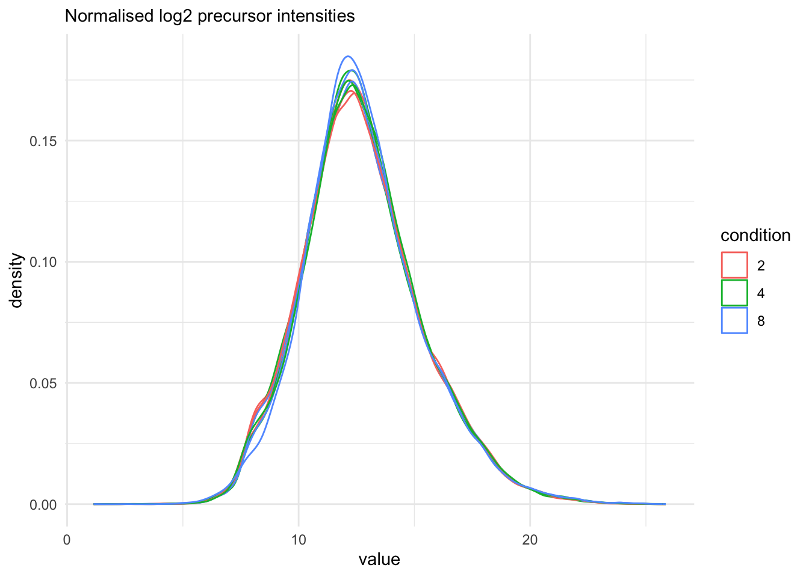
qf[, , "precursors_norm"] |>
longForm(colvars = colnames(colData(qf))) |>
data.frame() |>
filter(!is.na(value)) |>
ggplot() +
aes(x = sampleId,
y = value,
colour = condition,
group = colname) +
xlab("sample") +
geom_boxplot() +
theme_minimal() +
labs(subtitle = "Normalised log2 precursor intensities")Warning: 'experiments' dropped; see 'drops()'harmonizing input:
removing 36 sampleMap rows not in names(experiments)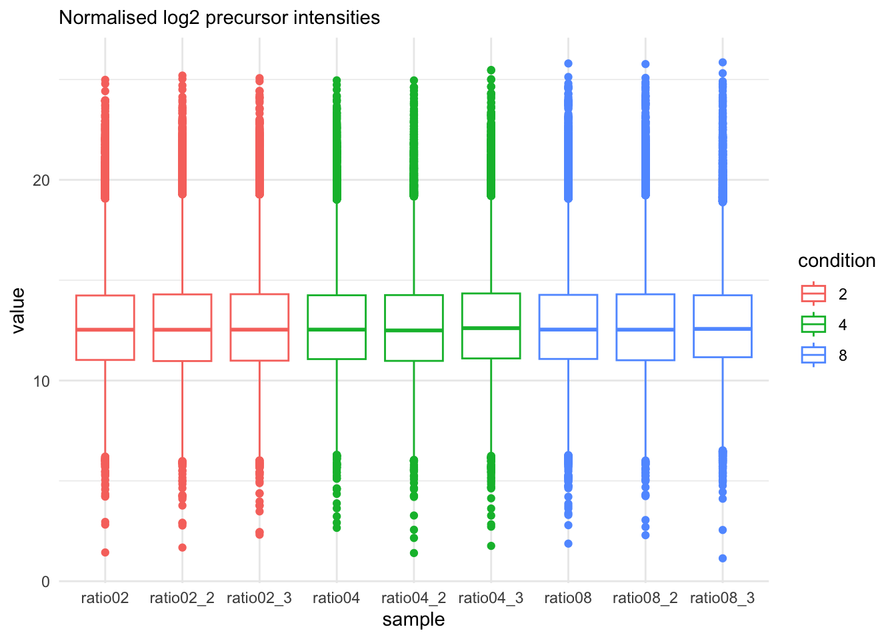
qf[, , "proteins"] |>
longForm(colvars = colnames(colData(qf))) |>
data.frame() |>
filter(!is.na(value)) |>
ggplot() +
aes(x = value,
colour = condition,
group = colname) +
geom_density() +
theme_minimal() +
labs(subtitle = "Normalised log2 protein intensities")Warning: 'experiments' dropped; see 'drops()'harmonizing input:
removing 36 sampleMap rows not in names(experiments)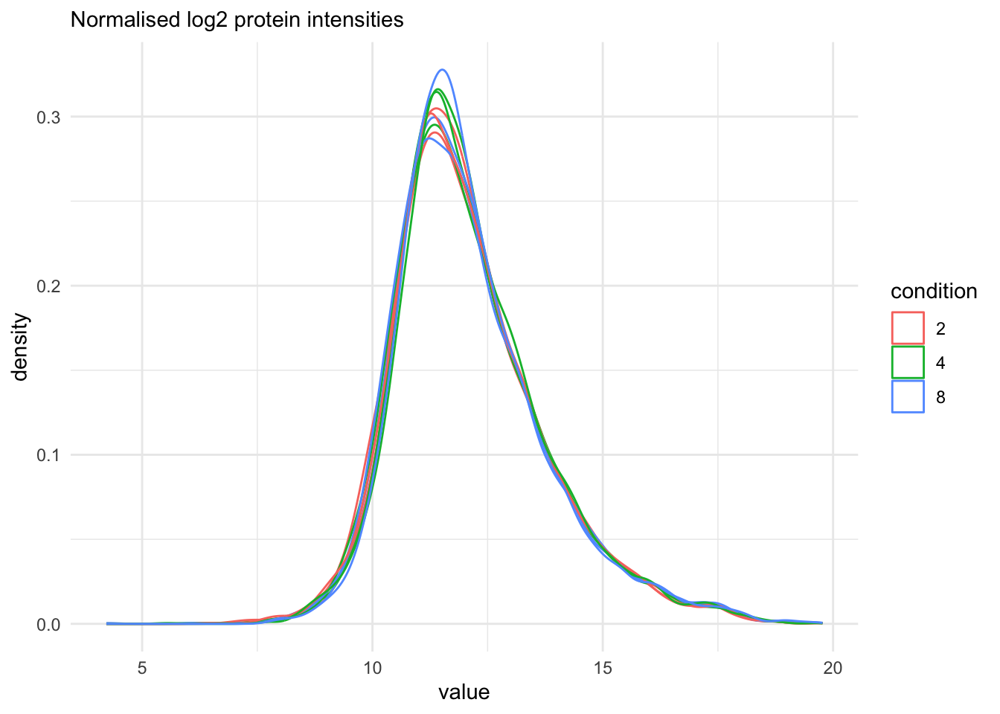
qf[, , "proteins"] |>
longForm(colvars = colnames(colData(qf))) |>
data.frame() |>
filter(!is.na(value)) |>
ggplot() +
aes(x = sampleId,
y = value,
colour = condition,
group = colname) +
xlab("sample") +
geom_boxplot() +
theme_minimal() +
labs(subtitle = "Normalised log2 protein intensities")Warning: 'experiments' dropped; see 'drops()'harmonizing input:
removing 36 sampleMap rows not in names(experiments)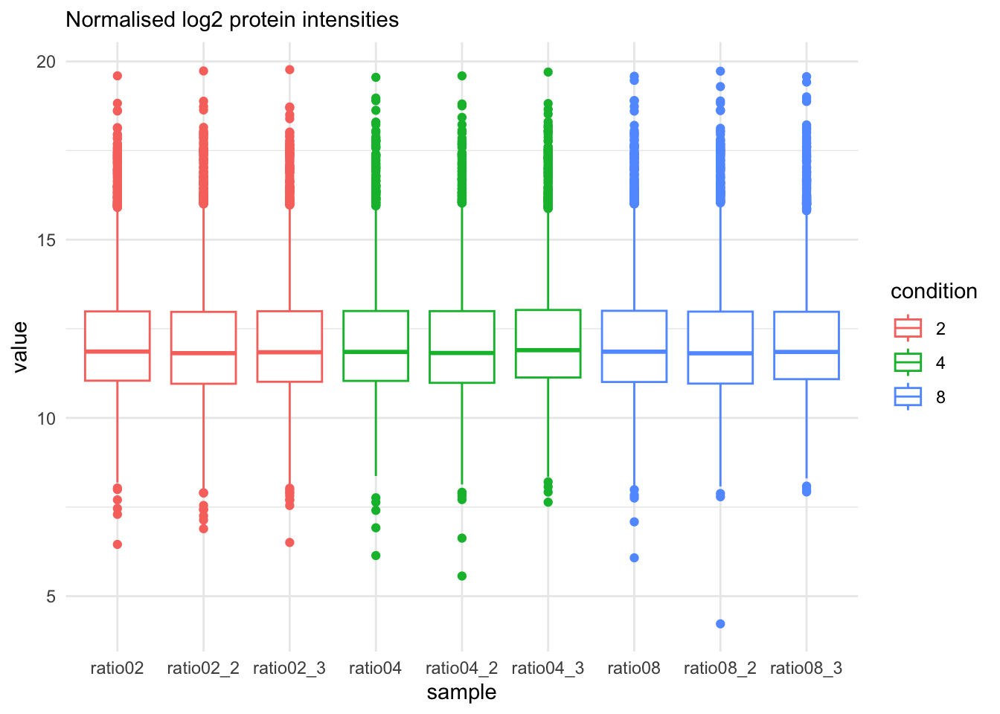
9.4.2 Charge state
qf[, , "precursors_norm"] |>
longForm(colvars = colnames(colData(qf)), rowvars = "FG_Charge") |>
as.data.frame() |>
filter(!is.na(value)) |>
filter(FG_Charge<=4) |>
ggplot(aes(x = sampleId)) +
geom_bar(aes(fill = factor(FG_Charge, levels = 4:1)),
colour = "black") +
labs(title = "Peptide types per sample",
x = "Sample",
fill = "Charge state") +
theme_bw()Warning: 'experiments' dropped; see 'drops()'harmonizing input:
removing 36 sampleMap rows not in names(experiments)
9.4.3 Identifications per sample
qf[,,"precursors_norm"] |>
longForm(colvars = colnames(colData(qf)),
rowvars= c("EG_PrecursorId",
"PG_ProteinGroups",
"PEP_StrippedSequence",
"FG_Charge")) |>
data.frame() |>
filter(!is.na(value)) |>
mutate(cond_rep = paste0("ratio", condition, "_", rep)) |>
group_by(condition, cond_rep) |>
summarise(Precursors = length(unique(EG_PrecursorId)),
`Protein Groups` = length(unique(PG_ProteinGroups))) |>
pivot_longer(-(1:2),
names_to = "Feature",
values_to = "IDs") |>
ggplot(aes(x = cond_rep, y = IDs, fill = condition)) +
geom_col() +
#scale_fill_observable() +
facet_wrap(~Feature,
scales = "free_y") +
labs(title = "Precursor and protein group identificiations per sample",
x = "Sample",
y = "Identifications") +
theme_bw() +
theme(axis.text.x = element_text(angle = 90))Warning: 'experiments' dropped; see 'drops()'harmonizing input:
removing 36 sampleMap rows not in names(experiments)`summarise()` has regrouped the output.
ℹ Summaries were computed grouped by condition and cond_rep.
ℹ Output is grouped by condition.
ℹ Use `summarise(.groups = "drop_last")` to silence this message.
ℹ Use `summarise(.by = c(condition, cond_rep))` for per-operation grouping
(`?dplyr::dplyr_by`) instead.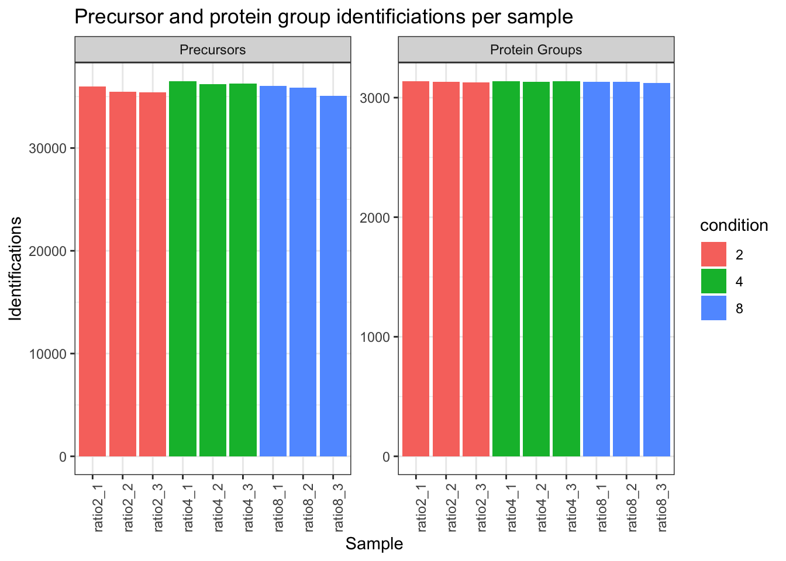
9.4.4 Dimensionality reduction plot
A common approach for data exploration is to perform dimension reduction, such as Multi Dimensional Scaling (MDS). We will first extract the set to explore along the sample annotations (used for plot colouring).
getWithColData(qf, "proteins") |>
as("SingleCellExperiment") |>
runMDS(exprs_values = 1) |>
plotMDS(colour_by = "condition", shape_by = "rep", point_size = 3) Warning: 'experiments' dropped; see 'drops()'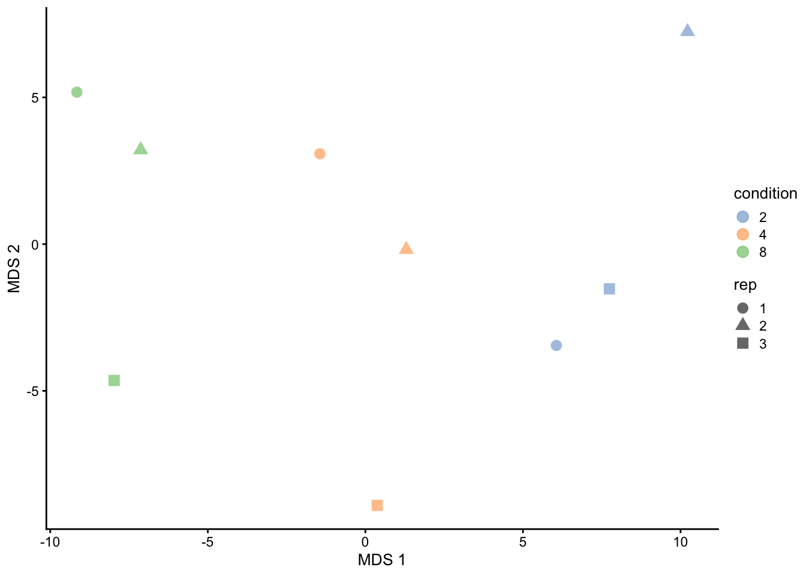
This plot reveals interesting information. First, we see that the samples are nicely separated according to their spike-in condition. Interestingly, the conditions are sorted by the concentration.
9.4.5 Correlation matrix
corMat <- qf[["proteins"]] |>
assay() |>
cor(method = "spearman", use = "pairwise.complete.obs")
colnames(corMat) <- qf$sampleId
rownames(corMat) <- qf$sampleId
corMat |>
ggcorrplot::ggcorrplot() +
scale_fill_viridis_c() +
labs(title = "Correlation matrix",
fill = "Correlation") +
theme(axis.text.x = element_text(angle = 90))Warning: `aes_string()` was deprecated in ggplot2 3.0.0.
ℹ Please use tidy evaluation idioms with `aes()`.
ℹ See also `vignette("ggplot2-in-packages")` for more information.
ℹ The deprecated feature was likely used in the ggcorrplot package.
Please report the issue at <https://github.com/kassambara/ggcorrplot/issues>.Scale for fill is already present.
Adding another scale for fill, which will replace the existing scale.
9.5 Data Modeling (Robust Regression)
9.5.1 Sources of variation
For this experiment, we can only model a single source of variation: spike-in concentration. All remaining sources of variability, e.g. pipetting errors, MS run to run variability, etc will be lumped in the residual variability (error term).
Spike-in condition effects: we model the source of variation induced by the experimental treatment of interest as a fixed effect, which we consider non-random, i.e. the treatment effect is assumed to be the same in repeated experiments, but it is unknown and has to be estimated.
When modelling a typical label-free experiment at the protein level, the model boils down to the following linear model:
\[ y_i = \mathbf{x}_i^T\boldsymbol{\beta} +\epsilon_i\] with the \(\log_2\)-normalised and summarised protein intensities in sample; \(\mathbf{x}_i\) a vector with the covariate pattern for the sample encoding the intercept, spike-in condition, or other experimental factors;
\(\boldsymbol{\beta}\) the vector of parameters that model the association between the covariates and the outcome; and \(\epsilon_i\) the residuals reflecting variation that is not captured by the fixed effects. Note that allows for a flexible parameterisation of the treatment beyond a single covariate, i.e. including a 1 for the intercept, continuous and categorical variables as well as their interactions. We assume the residuals to be independent and identically distributed (i.i.d) according to a normal distribution with zero mean and constant variance, i.e. \(\epsilon_i \sim N(0, \sigma^2_\epsilon)\), that can differ from protein to protein.
In R, this model is encoded using the following simple formula:
model <- ~ condition9.5.2 Model Estimation
We estimate the model with msqrob(). The function takes the QFeatures object, extracts the quantitative values from the "proteins" set generated during summarisation, and fits a simple linear model with condition as covariate, which are automatically retrieved from colData(qf). Note, that msqrob() can also take a SummarizedExperiment of precursor, peptide or protein intensities as its input.
qf <- msqrob(
qf,
i = "proteins",
formula = model,
robust = TRUE)We enable M-estimation (robust = TRUE) for improved robustness against outliers.
The fitting results are available in the msqrobModels column of the rowData. More specifically, the modelling output is stored in the rowData as a statModel object, one model per row (protein). We will see in a later section how to perform statistical inference on the estimated parameters.
models <- rowData(qf[["proteins"]])[["msqrobModels"]]
models[1:3]$D6VTK4
Object of class "StatModel"
The type is "rlm"
There number of elements is 5
$O13297
Object of class "StatModel"
The type is "rlm"
There number of elements is 5
$O13525
Object of class "StatModel"
The type is "rlm"
There number of elements is 5 9.5.3 Statistical inference
We can now convert the research question “do the spike-in conditions affect the protein intensities?” into a statistical hypothesis.
In other words, we need to translate this question in a null and alternative hypothesis on a single model parameter or on a linear combination of model parameters, which is also referred to with a contrast.
To aid defining contrasts, we will visualise the experimental design using the ExploreModelMatrix package.
vd <- ExploreModelMatrix::VisualizeDesign(
sampleData = colData(qf),
designFormula = model,
textSizeFitted = 4
)
vd$plotlist[[1]]
This plot shows that the average protein \(\log_2\) intensity for condition2 is modelled by (Intercept), for the condition4 group by (Intercept) + condtion4 and for the condition8 group by (Intercept) + condtion8.
Hence, to assess differential abundance of proteins between spike-in conditions, we will have to assess all pairwise combinations between the spike-in groups, which leads to 3 different contrasts, i.e. the log2 fold change between ratio 4 and ratio 2, \(\log_2 FC_{4-2} = (Intercept + condition4) - Intercept = condition4\), the log2 fold change between ratio 8 and ratio 2, \(\log_2 FC_{8-2} = (Intercept + condition8) - Intercept = condition8\), and the log2 fold change between ratio 8 and ratio 4, \(\log_2 FC_{8-4} = (Intercept + condition8) - (Intercept+condition4) = condition8 - condition4\).
We can generate the null-hypothesess for all pairwise comparisons manually. However, here we will use the createPairwiseContrasts function in msqrob2.
(allHypotheses <- createPairwiseContrasts(
model, colData(qf), "condition"
)
)Warning: the 'nobars' function has moved to the reformulas package. Please update your imports, or ask an upstream package maintainter to do so.
This warning is displayed once per session.[1] "condition4 = 0" "condition8 = 0"
[3] "condition8 - condition4 = 0"Based on these null hypothesis we now generate the contrast matrix with all three contrasts using the makeContrast function. Note, that experienced users can also define the contrast matrix, directly.
(L <- makeContrast(
allHypotheses,
parameterNames = colnames(vd$designmatrix)
)) condition4 condition8 condition8 - condition4
(Intercept) 0 0 0
condition4 1 0 -1
condition8 0 1 1We can now test our null hypothesis using hypothesisTest() which takes the QFeatures object with the fitted model and the contrast we just built. msqrob2 automatically applies the hypothesis testing to all features in the assay.
qf <- hypothesisTest(qf, i = "proteins", contrast = L)The results tables for each contrast are stored in the row data of the proteins assay in qf under the colomnames of the contrast matrix L.
qf[["proteins"]] |>
rowData() |>
names() [1] "PG_Genes"
[2] "PG_ProteinAccessions"
[3] "PG_ProteinGroups"
[4] "PG_ProteinNames"
[5] "PG_Organisms"
[6] "PG_NrOfPrecursorsIdentified_.Experiment.wide."
[7] "PG_Qvalue"
[8] "EG_IsDecoy"
[9] "PEP_IsProteotypic"
[10] "EG_IsImputed"
[11] "FG_PrecursorSignalToNoise"
[12] "species"
[13] "pepsPerProt"
[14] ".n"
[15] "msqrobModels"
[16] "condition4"
[17] "condition8"
[18] "condition8 - condition4" Users can directly access the results tables via de colData. However, msqrob2 also provides the msqrobCollect function. This function will automatically retrieve the results tables for all contrasts and combine them by default in one table. This table contains two additional columns: contrast with the name of the contrast and feature with the nme of the modelled feature, here protein group.
inferences <-
msqrobCollect(qf[["proteins"]], L)
head(inferences) logFC se df t pval adjPval
condition4.D6VTK4 -0.9422382 0.22347828 6.883529 -4.216240 0.00410673 0.3073203
condition4.O13297 0.1147566 0.07040123 7.745017 1.630037 0.14298348 0.9157873
condition4.O13525 0.4655863 0.42841749 7.461217 1.086758 0.31100085 0.9823835
condition4.O13539 0.2538748 0.19392600 7.488956 1.309132 0.22922632 0.9595912
condition4.O13563 0.2087877 0.13252594 7.892208 1.575448 0.15431575 0.9157873
condition4.O13585 0.3080130 0.14514735 7.693773 2.122071 0.06797045 0.8661563
contrast feature
condition4.D6VTK4 condition4 D6VTK4
condition4.O13297 condition4 O13297
condition4.O13525 condition4 O13525
condition4.O13539 condition4 O13539
condition4.O13563 condition4 O13563
condition4.O13585 condition4 O13585Note, that missing values can occur because data modelling resulted in a fitError. We refer users to our section 2.9 of our msqrob2 book where we elaborate on how to deal with proteins that could not be fit.
The results also include an adjusted p-value for each protein to correct for multiple testing using the Benjamini-Hochberg False Discovery Rate (FDR) method, which represents an estimate of the minimum FDR at which the test result for protein is considered significant, i.e. the expected fraction of false positives that are reported in the shortest top list of the most significant proteins that include protein \(j\).
Note, that for this design we exceptionally also know the ground truth. So we will also add this information to the inference table:
inferences <- inferences |>
mutate(species = rep(rowData(qf[["proteins"]])$species, ncol(L)))Results tables for significant proteins
We will return tables of proteins for which the contrasts are significant at the 5% FDR level.
- We set the significance level
- We loop over the contrasts
- We filter the significant results for the contrast from the table
- We print the table
alpha <- 0.05 #1.
for (contrasti in colnames(L)) #2.
{
sigList <- inferences |>
filter(contrast == contrasti & adjPval < alpha) #3.
cat("**Contrast:**", contrasti, "= 0 (", nrow(sigList), " significant proteins)\n\n") #4.
print(kable(sigList) |>
kable_styling(full_width = FALSE) |>
scroll_box(height = "250px")
) #4.
cat("\n\n\n---\n\n") #4.
}Contrast: condition4 = 0 ( 25 significant proteins)
| logFC | se | df | t | pval | adjPval | contrast | feature | species | |
|---|---|---|---|---|---|---|---|---|---|
| condition4.O76070ups | 1.4099719 | 0.1371764 | 7.724937 | 10.278531 | 0.0000089 | 0.0023347 | condition4 | O76070ups | ups |
| condition4.P00167ups | 0.8555011 | 0.1026393 | 8.000576 | 8.335021 | 0.0000325 | 0.0059995 | condition4 | P00167ups | ups |
| condition4.P00915ups | 0.9971421 | 0.0989058 | 7.638356 | 10.081739 | 0.0000111 | 0.0026844 | condition4 | P00915ups | ups |
| condition4.P00918ups | 1.0484314 | 0.0997035 | 7.825346 | 10.515495 | 0.0000069 | 0.0019620 | condition4 | P00918ups | ups |
| condition4.P01008ups | 1.4952023 | 0.1256149 | 7.978919 | 11.903061 | 0.0000023 | 0.0009484 | condition4 | P01008ups | ups |
| condition4.P02144ups | 1.0228006 | 0.0861708 | 7.807355 | 11.869454 | 0.0000029 | 0.0009893 | condition4 | P02144ups | ups |
| condition4.P02753ups | 1.2762092 | 0.1991129 | 7.748352 | 6.409477 | 0.0002374 | 0.0339154 | condition4 | P02753ups | ups |
| condition4.P02768ups | 1.0429582 | 0.0648136 | 7.587482 | 16.091648 | 0.0000004 | 0.0004065 | condition4 | P02768ups | ups |
| condition4.P04040ups | 0.9428461 | 0.0735588 | 8.000576 | 12.817577 | 0.0000013 | 0.0006781 | condition4 | P04040ups | ups |
| condition4.P06732ups | 1.1721397 | 0.0726915 | 7.979500 | 16.124855 | 0.0000002 | 0.0004065 | condition4 | P06732ups | ups |
| condition4.P12081ups | 1.1025265 | 0.0678612 | 7.655636 | 16.246782 | 0.0000003 | 0.0004065 | condition4 | P12081ups | ups |
| condition4.P15559ups | 1.0968159 | 0.0915276 | 7.648924 | 11.983448 | 0.0000031 | 0.0009893 | condition4 | P15559ups | ups |
| condition4.P19735 | -0.5384830 | 0.0887310 | 7.704507 | -6.068715 | 0.0003480 | 0.0437496 | condition4 | P19735 | yeast |
| condition4.P25588 | 0.6536718 | 0.0947339 | 7.976849 | 6.900083 | 0.0001262 | 0.0188934 | condition4 | P25588 | yeast |
| condition4.P28003 | -0.7954535 | 0.1301778 | 7.781571 | -6.110515 | 0.0003198 | 0.0418796 | condition4 | P28003 | yeast |
| condition4.P55957ups | 1.6841394 | 0.1764547 | 7.559728 | 9.544313 | 0.0000176 | 0.0034542 | condition4 | P55957ups | ups |
| condition4.P62937ups | 1.0443523 | 0.0753904 | 7.747306 | 13.852590 | 0.0000010 | 0.0006060 | condition4 | P62937ups | ups |
| condition4.P62988ups | 1.1106437 | 0.1192121 | 5.982025 | 9.316536 | 0.0000881 | 0.0138493 | condition4 | P62988ups | ups |
| condition4.P63165ups | 0.9966427 | 0.0690327 | 7.694869 | 14.437249 | 0.0000008 | 0.0005932 | condition4 | P63165ups | ups |
| condition4.P63279ups | 0.8830460 | 0.1159522 | 7.540391 | 7.615606 | 0.0000849 | 0.0138493 | condition4 | P63279ups | ups |
| condition4.P68871ups | 0.8992548 | 0.1093595 | 8.000576 | 8.222923 | 0.0000358 | 0.0062503 | condition4 | P68871ups | ups |
| condition4.P69905ups | 1.0571599 | 0.0987743 | 6.973724 | 10.702783 | 0.0000140 | 0.0031336 | condition4 | P69905ups | ups |
| condition4.Q06830ups | 0.8920720 | 0.0744348 | 7.896920 | 11.984605 | 0.0000024 | 0.0009484 | condition4 | Q06830ups | ups |
| condition4.Q07540 | 0.4932690 | 0.0773179 | 7.610290 | 6.379747 | 0.0002642 | 0.0361004 | condition4 | Q07540 | yeast |
| condition4.Q15843ups | 1.5335402 | 0.1575880 | 7.587830 | 9.731326 | 0.0000150 | 0.0031336 | condition4 | Q15843ups | ups |
Contrast: condition8 = 0 ( 27 significant proteins)
| logFC | se | df | t | pval | adjPval | contrast | feature | species | |
|---|---|---|---|---|---|---|---|---|---|
| condition8.O76070ups | 2.797109 | 0.1371764 | 7.724937 | 20.390598 | 1.00e-07 | 0.0000113 | condition8 | O76070ups | ups |
| condition8.P00167ups | 2.061681 | 0.1026393 | 8.000576 | 20.086656 | 0.00e+00 | 0.0000103 | condition8 | P00167ups | ups |
| condition8.P00915ups | 2.081168 | 0.1022448 | 7.638356 | 20.354750 | 1.00e-07 | 0.0000123 | condition8 | P00915ups | ups |
| condition8.P00918ups | 2.302045 | 0.0997035 | 7.825346 | 23.088912 | 0.00e+00 | 0.0000050 | condition8 | P00918ups | ups |
| condition8.P01008ups | 3.218058 | 0.1256149 | 7.978919 | 25.618429 | 0.00e+00 | 0.0000024 | condition8 | P01008ups | ups |
| condition8.P01031ups | 2.050584 | 0.1820243 | 7.681113 | 11.265446 | 4.80e-06 | 0.0006255 | condition8 | P01031ups | ups |
| condition8.P02144ups | 2.180008 | 0.0876413 | 7.807355 | 24.874218 | 0.00e+00 | 0.0000036 | condition8 | P02144ups | ups |
| condition8.P02753ups | 2.433398 | 0.1956777 | 7.748352 | 12.435746 | 2.20e-06 | 0.0003072 | condition8 | P02753ups | ups |
| condition8.P02768ups | 2.200892 | 0.0652287 | 7.587482 | 33.741171 | 0.00e+00 | 0.0000016 | condition8 | P02768ups | ups |
| condition8.P04040ups | 2.152385 | 0.0735588 | 8.000576 | 29.260721 | 0.00e+00 | 0.0000016 | condition8 | P04040ups | ups |
| condition8.P06732ups | 2.274760 | 0.0726915 | 7.979500 | 31.293343 | 0.00e+00 | 0.0000016 | condition8 | P06732ups | ups |
| condition8.P08263ups | 2.229585 | 0.2376518 | 7.215416 | 9.381728 | 2.68e-05 | 0.0031231 | condition8 | P08263ups | ups |
| condition8.P12081ups | 2.259739 | 0.0678612 | 7.655636 | 33.299412 | 0.00e+00 | 0.0000016 | condition8 | P12081ups | ups |
| condition8.P15559ups | 2.238036 | 0.0915276 | 7.648924 | 24.452039 | 0.00e+00 | 0.0000048 | condition8 | P15559ups | ups |
| condition8.P16083ups | 2.063344 | 0.1387792 | 7.353936 | 14.867821 | 9.00e-07 | 0.0001476 | condition8 | P16083ups | ups |
| condition8.P41159ups | 2.041917 | 0.1828542 | 6.707153 | 11.166913 | 1.41e-05 | 0.0017684 | condition8 | P41159ups | ups |
| condition8.P53733 | 2.137281 | 0.2360076 | 8.000576 | 9.055987 | 1.77e-05 | 0.0021393 | condition8 | P53733 | yeast |
| condition8.P55957ups | 2.935075 | 0.1764547 | 7.559728 | 16.633588 | 3.00e-07 | 0.0000551 | condition8 | P55957ups | ups |
| condition8.P61626ups | 2.049744 | 0.1831088 | 8.000576 | 11.194131 | 3.60e-06 | 0.0004964 | condition8 | P61626ups | ups |
| condition8.P62937ups | 2.174840 | 0.0753904 | 7.747306 | 28.847703 | 0.00e+00 | 0.0000018 | condition8 | P62937ups | ups |
| condition8.P62988ups | 2.192299 | 0.1129785 | 5.982025 | 19.404558 | 1.20e-06 | 0.0001870 | condition8 | P62988ups | ups |
| condition8.P63165ups | 2.055359 | 0.0690327 | 7.694869 | 29.773688 | 0.00e+00 | 0.0000018 | condition8 | P63165ups | ups |
| condition8.P63279ups | 2.284883 | 0.1159522 | 7.540391 | 19.705397 | 1.00e-07 | 0.0000171 | condition8 | P63279ups | ups |
| condition8.P68871ups | 2.164834 | 0.1093595 | 8.000576 | 19.795572 | 0.00e+00 | 0.0000106 | condition8 | P68871ups | ups |
| condition8.P69905ups | 2.176994 | 0.0879879 | 6.973724 | 24.741959 | 0.00e+00 | 0.0000106 | condition8 | P69905ups | ups |
| condition8.Q06830ups | 2.042787 | 0.0744348 | 7.896920 | 27.443967 | 0.00e+00 | 0.0000018 | condition8 | Q06830ups | ups |
| condition8.Q15843ups | 2.538127 | 0.1575880 | 7.587830 | 16.106092 | 4.00e-07 | 0.0000637 | condition8 | Q15843ups | ups |
Contrast: condition8 - condition4 = 0 ( 23 significant proteins)
| logFC | se | df | t | pval | adjPval | contrast | feature | species | |
|---|---|---|---|---|---|---|---|---|---|
| condition8 - condition4.O76070ups | 1.387137 | 0.1338330 | 7.724937 | 10.364685 | 0.0000084 | 0.0016481 | condition8 - condition4 | O76070ups | ups |
| condition8 - condition4.P00167ups | 1.206180 | 0.1026393 | 8.000576 | 11.751635 | 0.0000025 | 0.0006074 | condition8 - condition4 | P00167ups | ups |
| condition8 - condition4.P00915ups | 1.084026 | 0.1022448 | 7.638356 | 10.602255 | 0.0000077 | 0.0016207 | condition8 - condition4 | P00915ups | ups |
| condition8 - condition4.P00918ups | 1.253613 | 0.0981923 | 7.825346 | 12.766921 | 0.0000016 | 0.0005100 | condition8 - condition4 | P00918ups | ups |
| condition8 - condition4.P01008ups | 1.722855 | 0.1253872 | 7.978919 | 13.740278 | 0.0000008 | 0.0003058 | condition8 - condition4 | P01008ups | ups |
| condition8 - condition4.P01031ups | 1.100462 | 0.1820243 | 7.681113 | 6.045688 | 0.0003610 | 0.0493308 | condition8 - condition4 | P01031ups | ups |
| condition8 - condition4.P02144ups | 1.157208 | 0.0876413 | 7.807355 | 13.203912 | 0.0000013 | 0.0004493 | condition8 - condition4 | P02144ups | ups |
| condition8 - condition4.P02768ups | 1.157934 | 0.0661728 | 7.587482 | 17.498629 | 0.0000002 | 0.0002017 | condition8 - condition4 | P02768ups | ups |
| condition8 - condition4.P04040ups | 1.209539 | 0.0735588 | 8.000576 | 16.443144 | 0.0000002 | 0.0002017 | condition8 - condition4 | P04040ups | ups |
| condition8 - condition4.P06732ups | 1.102620 | 0.0725633 | 7.979500 | 15.195294 | 0.0000004 | 0.0002017 | condition8 - condition4 | P06732ups | ups |
| condition8 - condition4.P12081ups | 1.157212 | 0.0657590 | 7.655636 | 17.597776 | 0.0000002 | 0.0002017 | condition8 - condition4 | P12081ups | ups |
| condition8 - condition4.P15559ups | 1.141220 | 0.0886326 | 7.648924 | 12.875841 | 0.0000019 | 0.0005315 | condition8 - condition4 | P15559ups | ups |
| condition8 - condition4.P16083ups | 1.231228 | 0.1480057 | 7.353936 | 8.318791 | 0.0000537 | 0.0088815 | condition8 - condition4 | P16083ups | ups |
| condition8 - condition4.P39702 | -1.036769 | 0.1709732 | 8.000576 | -6.063926 | 0.0003011 | 0.0430230 | condition8 - condition4 | P39702 | yeast |
| condition8 - condition4.P55957ups | 1.250936 | 0.1693137 | 7.559728 | 7.388275 | 0.0001028 | 0.0161619 | condition8 - condition4 | P55957ups | ups |
| condition8 - condition4.P62937ups | 1.130488 | 0.0737104 | 7.747306 | 15.336885 | 0.0000004 | 0.0002017 | condition8 - condition4 | P62937ups | ups |
| condition8 - condition4.P62988ups | 1.081655 | 0.1033138 | 5.982025 | 10.469607 | 0.0000454 | 0.0079326 | condition8 - condition4 | P62988ups | ups |
| condition8 - condition4.P63165ups | 1.058716 | 0.0671541 | 7.694869 | 15.765475 | 0.0000004 | 0.0002017 | condition8 - condition4 | P63165ups | ups |
| condition8 - condition4.P63279ups | 1.401838 | 0.1110318 | 7.540391 | 12.625552 | 0.0000024 | 0.0006074 | condition8 - condition4 | P63279ups | ups |
| condition8 - condition4.P68871ups | 1.265579 | 0.1093595 | 8.000576 | 11.572650 | 0.0000028 | 0.0006338 | condition8 - condition4 | P68871ups | ups |
| condition8 - condition4.P69905ups | 1.119834 | 0.0987743 | 6.973724 | 11.337299 | 0.0000096 | 0.0017686 | condition8 - condition4 | P69905ups | ups |
| condition8 - condition4.Q06830ups | 1.150715 | 0.0737777 | 7.896920 | 15.597067 | 0.0000003 | 0.0002017 | condition8 - condition4 | Q06830ups | ups |
| condition8 - condition4.Q15843ups | 1.004587 | 0.1516556 | 7.587830 | 6.624132 | 0.0002091 | 0.0312970 | condition8 - condition4 | Q15843ups | ups |
Volcanoplots
A volcano plot is a common visualisation that provides an overview of the hypothesis testing results, plotting the \(-\log_{10}\) p-value1 as a function of the estimated log fold change. Volcano plots can be used to highlight the most interesting proteins that have large fold changes and/or are highly significant. We can use the table above directly to build a volcano plot using ggplot2 functionality. We also highlight which proteins are UPS standards, known to be differentially abundant by experimental design.
Experienced users can make the plot themselves. However, in msqrob2 we also provide the plotVolcano function that generates volcanoplots based on msqrob2 inference tables generated with the hypothesisTest function.
Since the inference table contains multiple contrast we use the facet_wrap function to make a separate volcano plot for each contrast.
volcanoplots <- inferences |>
plotVolcano() +
facet_wrap(~contrast)
volcanoplots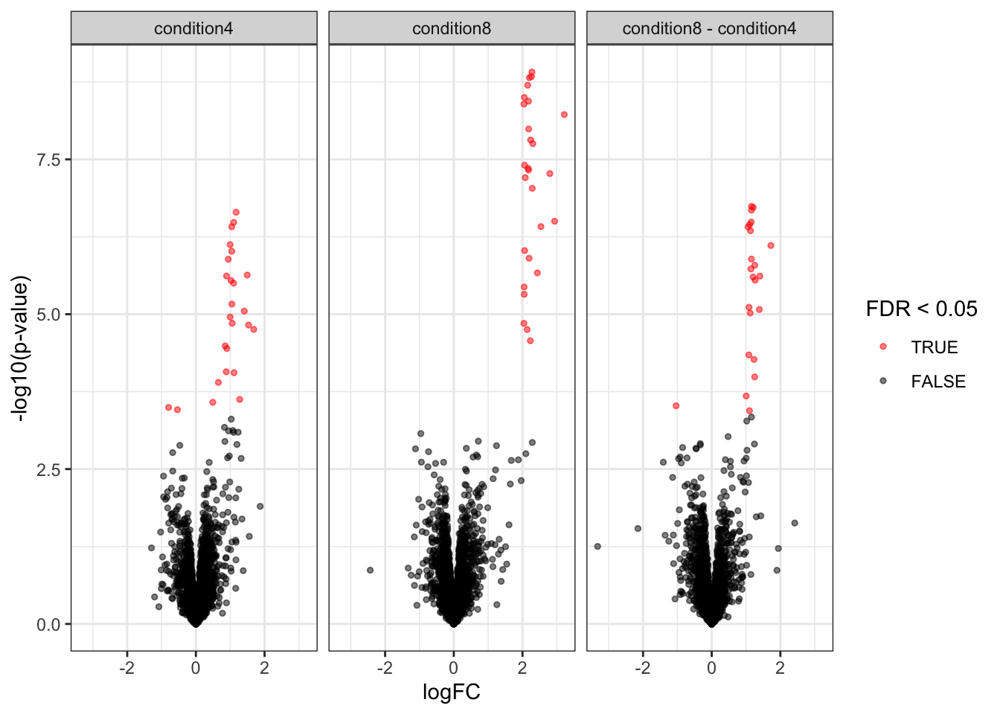
Heatmaps
We construct heatmaps for the significant proteins for each contrast.
- We will loop over the column names of the contrast matrix
Lwith a user-defined function that extracts - the names of the significant features for a contrast
- the quant data for the significant proteins and scale it
- annotation,
- and returns the heatmap using the quants data. We do not cluster columns (samples) to keep them together according to the design.
- We feed the function with the assay
proteinsalong with its colData and - the significance level
alpha
heatmaps <- lapply(
colnames(L), #1.
function(contrast, se, alpha)
{
sig <- rowData(se)[[contrast]] |> #2.
filter(adjPval < alpha) |>
rownames()
quants <- t(scale(t(assay(se[sig,])))) #3
colnames(quants) <- paste0("con", se$condition,"_rep",se$rep) #4.
annotations <- columnAnnotation(condition = se$condition) #4.
set.seed(1234) ## annotation colours are randomly generated by default
return( #.5
Heatmap(
quants,
name = "log2 intensity",
top_annotation = annotations,
column_title = paste0(contrast, " = 0")
)
)
},
se = getWithColData(qf, "proteins"), #6.
alpha = alpha) #7.Warning: 'experiments' dropped; see 'drops()'heatmaps[[1]]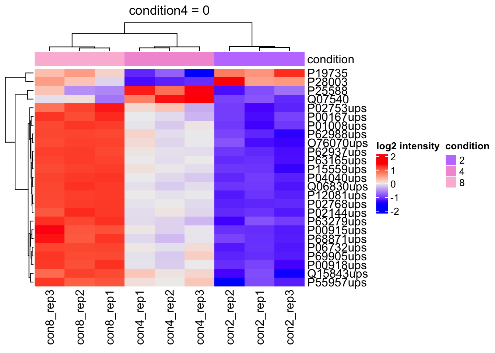
[[2]]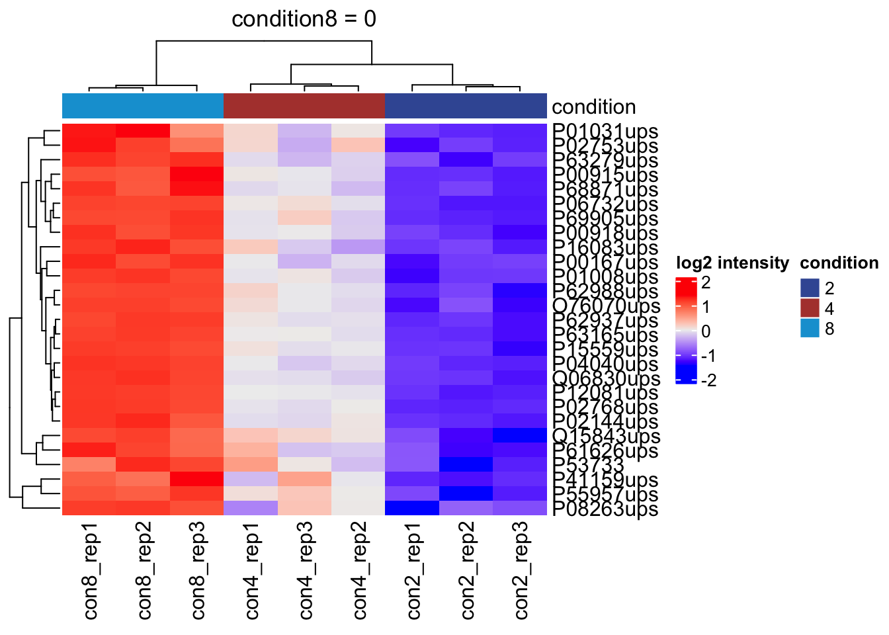
[[3]]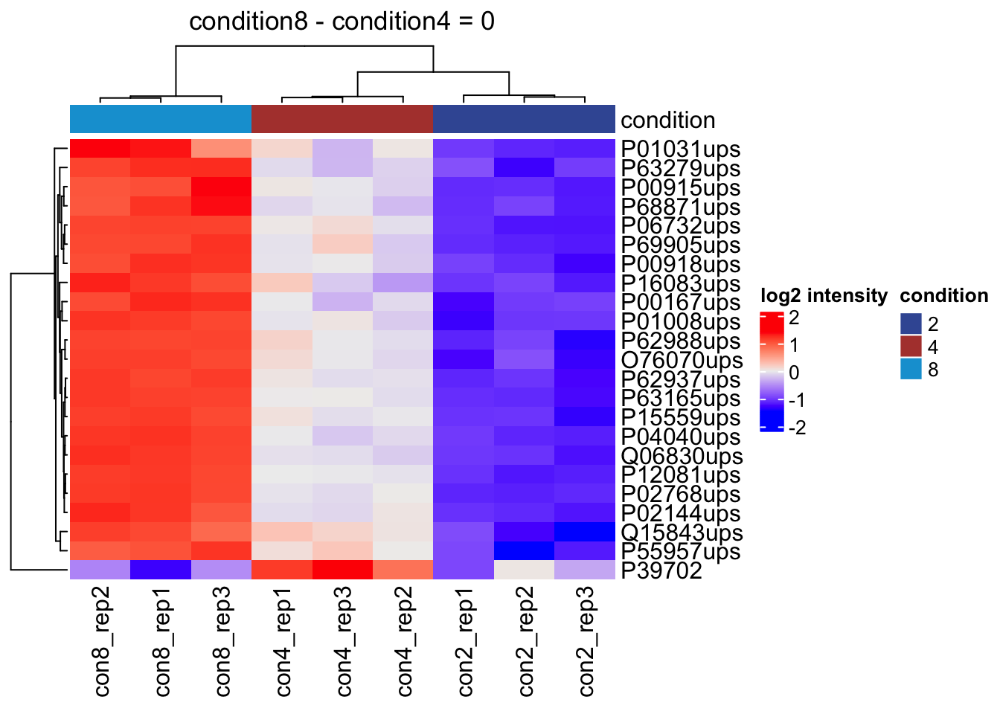
A typical workflow for the analysis of a proteomics experiment will end.
9.6 Assess performance
Note, that the evaluations in this section are typically not possible on real experimental data. Indeed, we are using a spike-in dataset so we know the ground truth: all human UPS proteins are differentially abundant (DA) between the conditions and the yeast proteins are non-DA.
We use a nominal FDR level of 0.05
alpha <- 0.059.6.1 Real Fold changes
As this is a spike-in study with known ground truth, we can also plot the log2 fold change distributions against the expected values, in this case 0 for the yeast proteins and the difference of the log concentration for the spiked-in UPS standards. We first create a small table with the real values.
- We extract the levels from factor condition
- We convert then into a number as they refer to the real ratio
- We log2-transform them
- We calculate all pairwise differences between log2 transformed ratio’s to obtain the log2 fold changes
We use a similar operation to construct the name of the corresponding contrast.
(realLogFC <- data.frame(
logFC = colData(qf)$condition |>
levels() |> # 1.
as.double() |> # 2.
log2() |> # 3.
combn(m=2, FUN = diff), #4.
contrast = colData(qf)$condition |>
levels() |>
combn(m=2, FUN= function(x) paste0(x[2]," - ",x[1])) |>
recode("4 - 2" = "condition4",
"8 - 2" = "condition8",
"8 - 4" = "condition8 - condition4")
)
) logFC contrast
1 1 condition4
2 2 condition8
3 1 condition8 - condition4We now evaluate if the estimated fold changes correspond to the real fold changes.
- We plot the log fold changes in function of the spikein condition and color according to spikein condition.
- We add a boxplot layer.
- We use custom colors.
- We add a horizontal line at 0, which corresponds to the known log2 fold change for yeast proteins
- We add a horizontal lines for known log2 fold changes of the spiked UPS proteins.
logFC <- inferences |>
filter(!is.na(logFC)) |>
ggplot(aes(x = species, y = logFC, color= species)) + #1.
geom_boxplot() + #2.
theme_bw() +
scale_color_manual(
values = c("grey20", "firebrick"), #3.
name = "",
labels = c("yeast", "ups")
) +
geom_hline(yintercept = 0, color="grey20") + # 4.
facet_wrap(~contrast) +
geom_hline(aes(yintercept = logFC), color="firebrick", data=realLogFC) #5.
logFC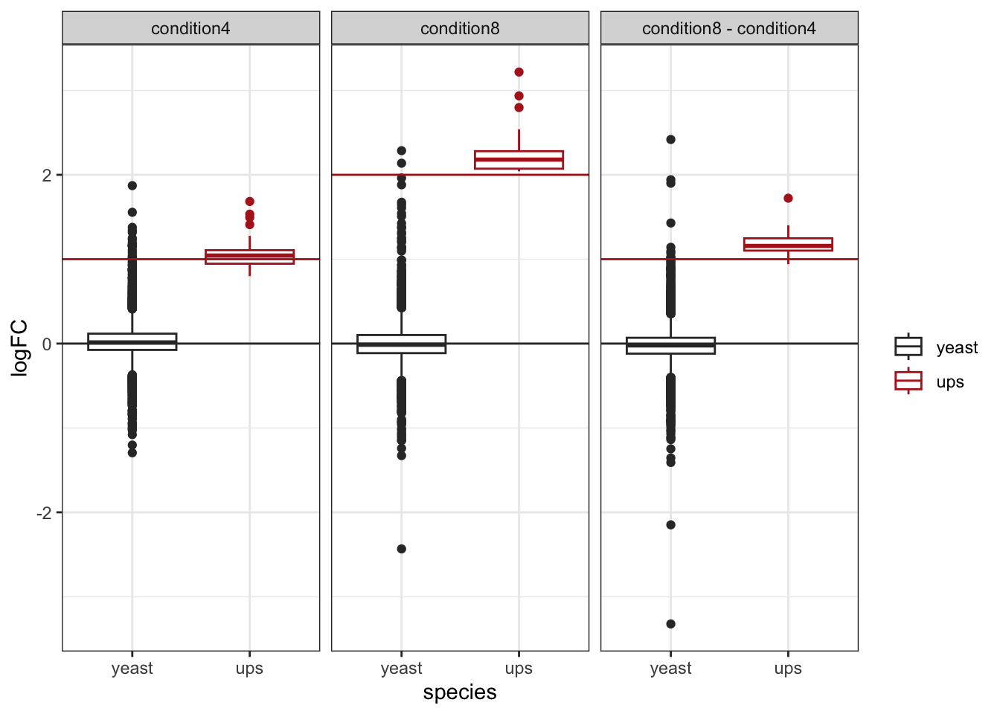
9.6.2 True and false positives
All human UPS proteins are differentially abundant (DA) between the conditions and the yeast proteins are non-DA.
tpFpTable <- group_by(inferences, contrast) |>
filter(adjPval < alpha) |>
summarise("TP" = sum(species == "ups"),
"FP" = sum(species != "ups"),
"FDP" = mean(species != "ups"))
tpFpTable# A tibble: 3 × 4
contrast TP FP FDP
<chr> <int> <int> <dbl>
1 condition4 21 4 0.16
2 condition8 26 1 0.0370
3 condition8 - condition4 22 1 0.04359.6.3 TPR - FDP curves
We generate the TPR-FDP curves to assess the performance to prioritise differentially abundant proteins. Again, these curves are built using the ground truth information about which proteins are differentially abundant (spiked in) and which proteins are constant across samples. We create two functions to compute the TPR and the FDP.
computeFDP <- function(pval, tp) {
ord <- order(pval)
fdp <- cumsum(!tp[ord]) / 1:length(tp)
fdp[order(ord)]
}
computeTPR <- function(pval, tp, nTP = NULL) {
if (is.null(nTP)) nTP <- sum(tp)
ord <- order(pval)
tpr <- cumsum(tp[ord]) / nTP
tpr[order(ord)]
}We apply these functions and compute the corresponding metric using the statistical inference results and the ground truth information.
performance <- inferences |> group_by(contrast) |>
na.exclude() |>
mutate(tpr = computeTPR(pval, species == "ups"),
fdp = computeFDP(pval, species == "ups")) |>
arrange(fdp)We also highlight the observed FDP at a \(alpha = 5\%\) FDR threshold.
workPoints <- performance |>
group_by(contrast) |>
filter(adjPval < 0.05) |>
slice_max(pval)ggplot(performance) +
aes(
y = fdp,
x = tpr,
) +
geom_line() +
geom_point(data = workPoints, size = 3) +
geom_hline(yintercept = 0.05, linetype = 2) +
facet_wrap( ~ contrast) +
coord_flip(ylim = c(0, 0.2)) +
theme_minimal()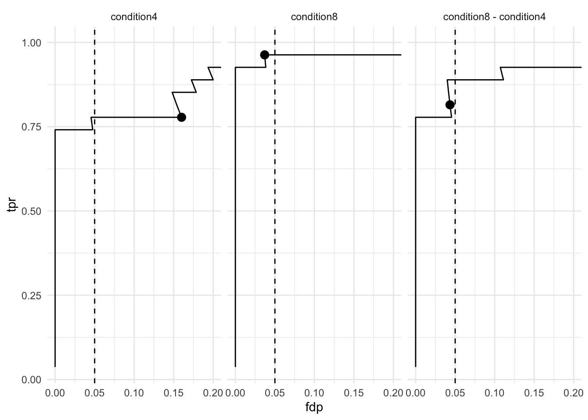
9.6.4 Volcano-plots
We make a separate plot per contrast and indicate the ground truth in the plot.
inferences |>
plotVolcano() +
facet_wrap(~contrast) +
aes(color = species, shape = adjPval < alpha) +
scale_color_manual(
values = c("grey20", "firebrick"),
name = "species",
labels = c("yeast", "ups")
) +
labs(shape="FDR < 0.05") +
geom_vline(aes(xintercept = logFC), data = realLogFC , col ="firebrick") +
geom_hline(aes(yintercept = -log10(adjAlpha)), data = inferences |>
group_by(contrast) |>
summarize(adjAlpha = alpha *mean(adjPval < alpha, na.rm=TRUE), .groups="drop"))Scale for colour is already present.
Adding another scale for colour, which will replace the existing scale.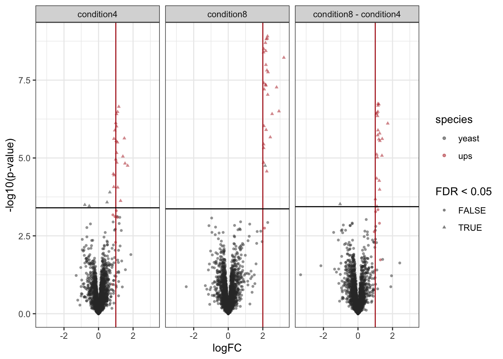
Note, that upon this transformation a value of 1 represents a p-value of 0.1, 2 a p-value of 0.01, 3 a p-value of 0.001, etc.↩︎